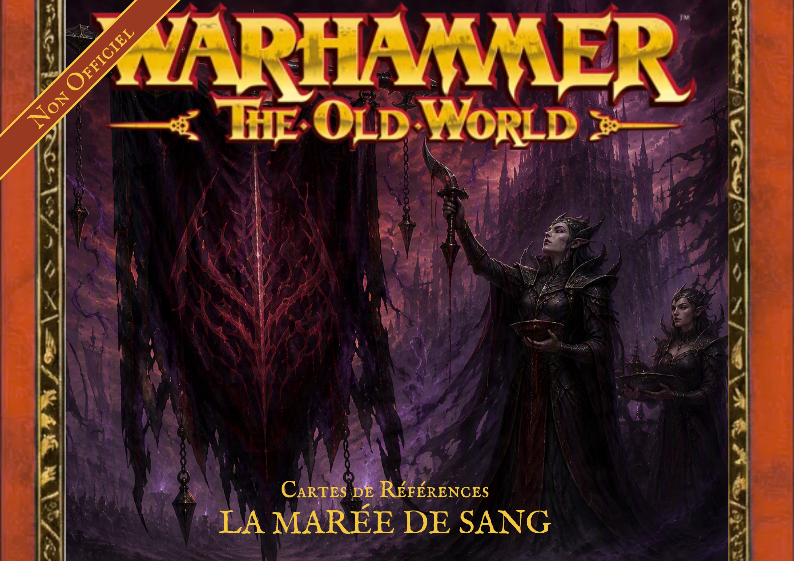
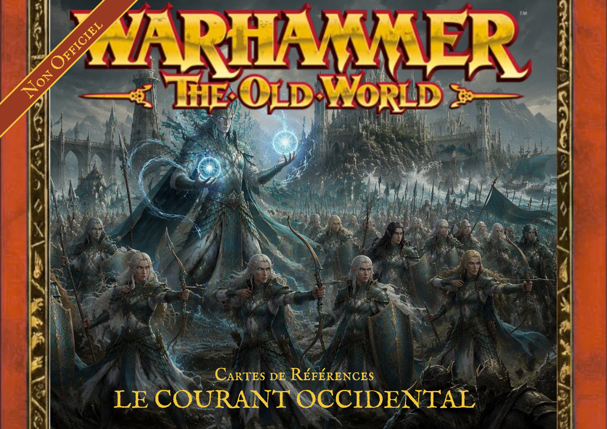
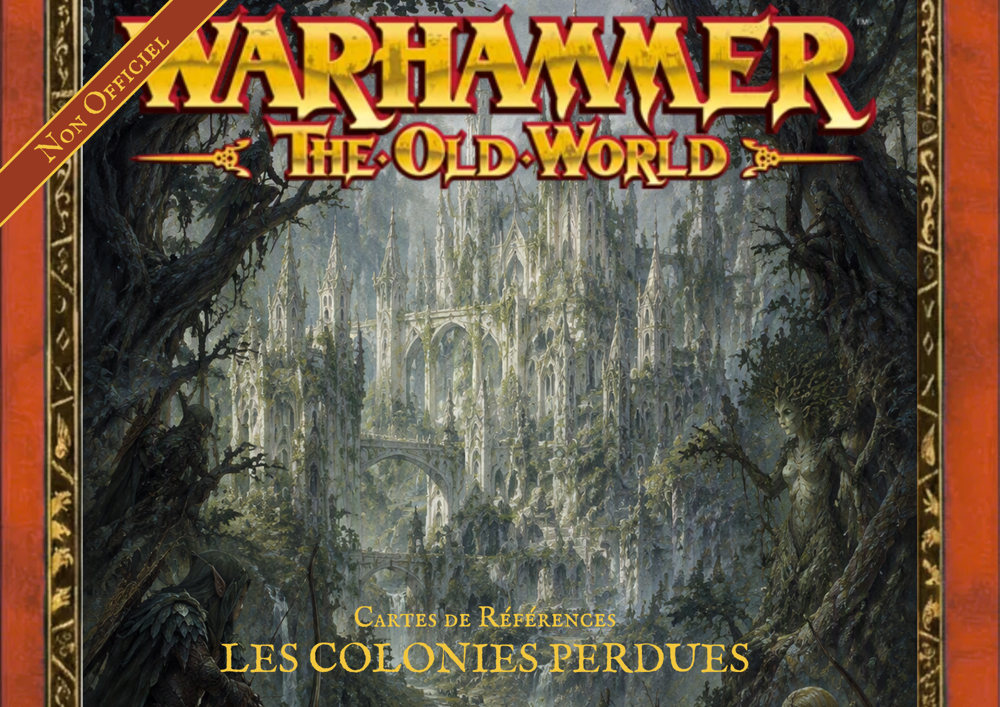

La Marée de Sang

Faites souffrir vos ennemis. Montrez leur votre cruauté !
TéléchargerSuppléments • Campagnes • Cartes de références
La Marée de Sang
Une campagne maritime fan-made pour
Warhammer: The Old World. Deux flottes. Une mer hostile. Une chasse qui ne peut se terminer que par la destruction ou la fuite.



Faites souffrir vos ennemis. Montrez leur votre cruauté !
Télécharger
Libérez l'océan sur vos ennemis. Montrez votre maîtrise des flots !
Télécharger
Après les rappels des colons, la forêt recouvre tout.
Bientôt disponibleCe site rassemble mes créations réalisées pour Warhammer: The Old World : livres d'armée, suppléments, campagnes narratives, cartes de références et outils de création de listes.
Ces contenus sont des créations amateurs, non officielles, proposées gratuitement et sans affiliation avec Games Workshop. Ils ne sont pas destinés à la vente. Ils sont conçus pour expérimenter de nouvelles façons de jouer et enrichir les parties entre joueurs.
Important : Warhammer, Warhammer: The Old World et les éléments associés sont des propriétés de leurs détenteurs respectifs. Ce projet n'est ni approuvé, ni publié, ni soutenu par Games Workshop.
Illustrations et fragments des Archives du Courant publiés au fil des campagnes.